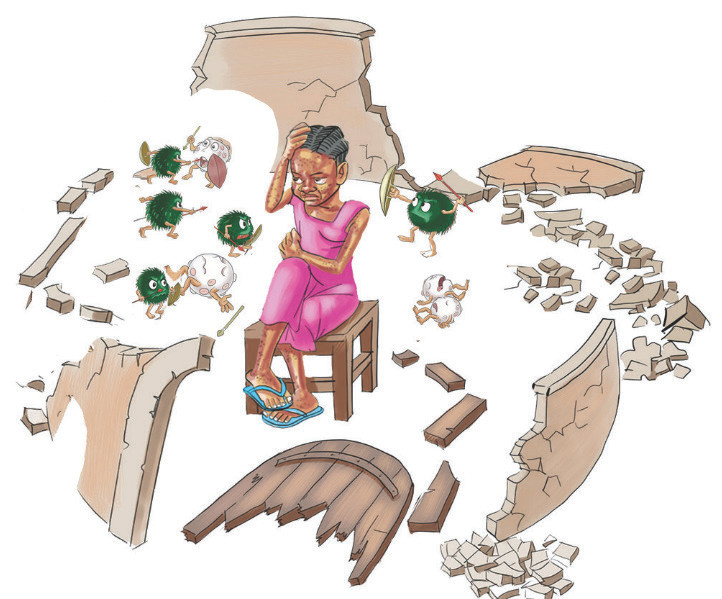

Chunguza Kielelezo namba 2, kisha jibu maswali yanayofuata.

Kielelezo namba 2: Mfano wa ngome dhaifu iliyoshambuliwa
Maswali
1. Tunga habari isiyozidi maneno hamsini kutokana na Kielelezo namba 2.
2. Madhara gani yanayoweza kutokea iwapo kinga ya mwili itakuwa dhaifu?